前言
一关尽量以多种方式进行呈现，有更好的更多的欢迎讨论。
Docker 搭建的时候文件夹会有一点问题，需要进行一下操作。
出现下图问题可以用这个方法解决：
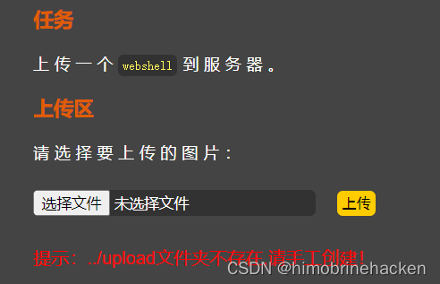
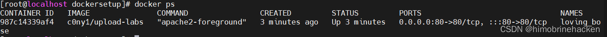
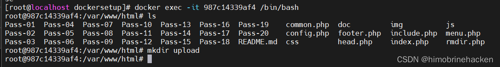
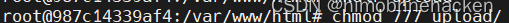
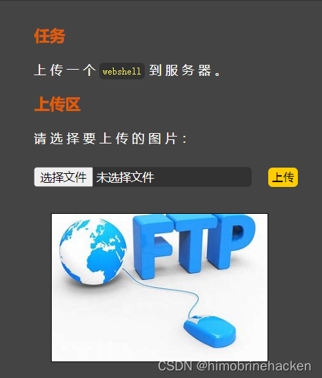
Pass-1
方法一：Burp 上传
这个常规一点，用 Burp 上传。
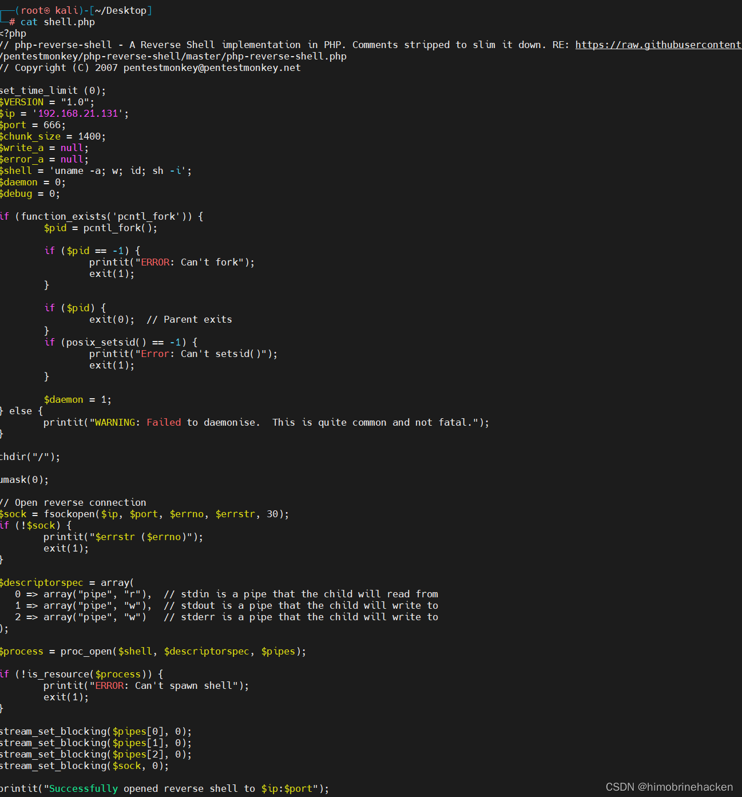
这个 shell 是反弹 shell（在线生成的）。
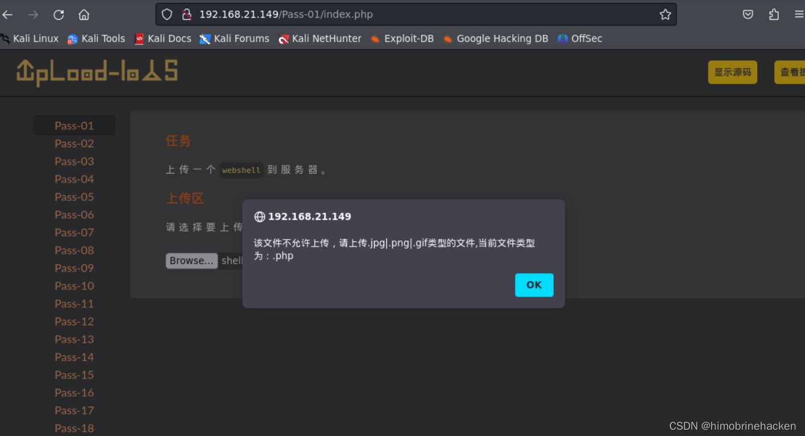
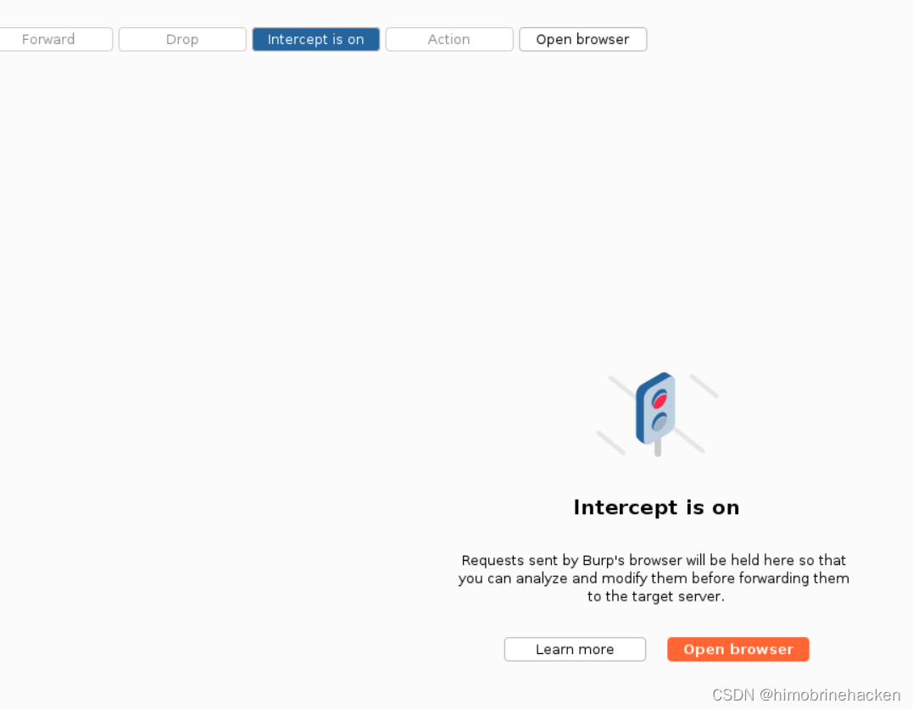
这个是前端验证，先改一下后缀就可以。
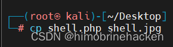
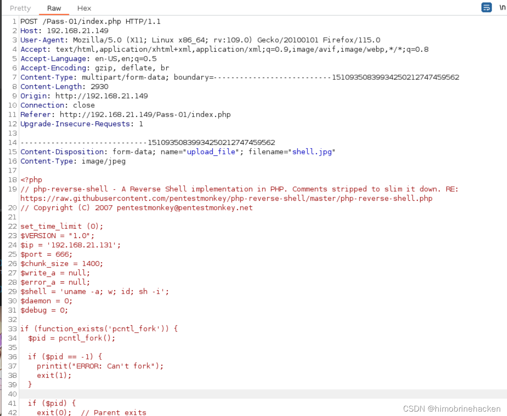
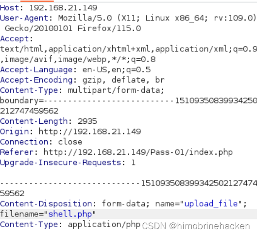
访问这个图片的位置。
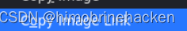
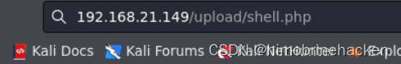
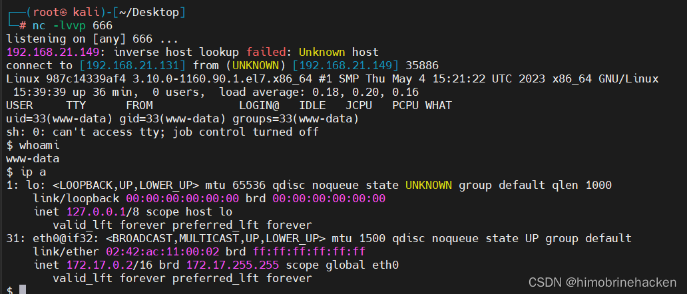
方法二：禁用 JavaScript
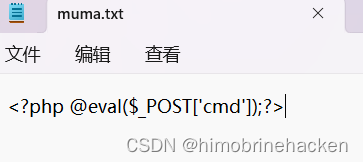
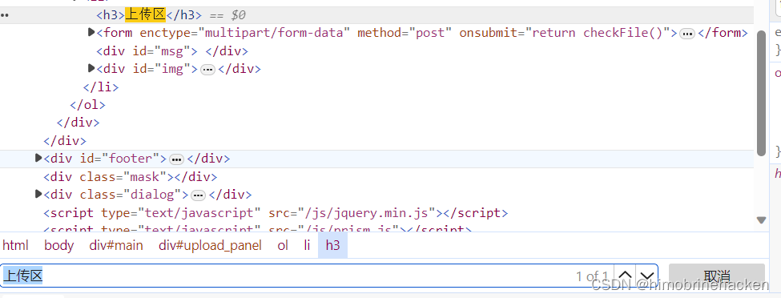
JS 判断直接禁用。在 Edge 游览器中按 Ctrl+Shift+P，输入 "java" 找到禁用选项。
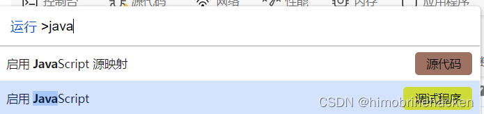
我已经禁用了，看到的就是"启用"，点一下就好了（记得要改回去）。
再上传文件。
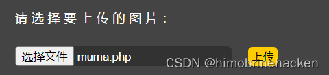
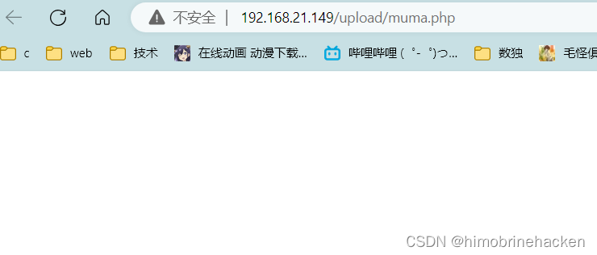
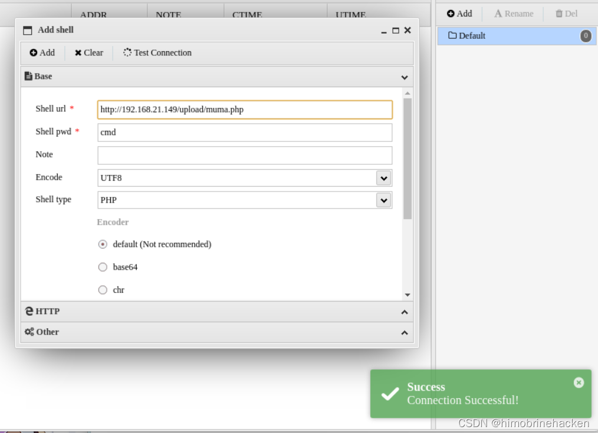
连接成功。
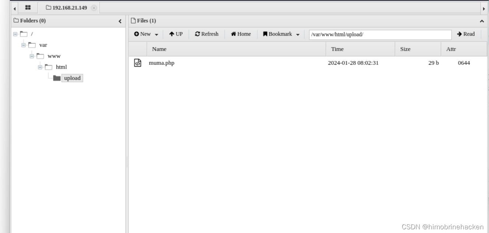
源码分析
分析个屁，前端能直接被干掉。
function checkFile() {
var file = document.getElementsByName('upload_file')[0].value;
if (file == null || file == "") {
alert("请选择要上传的文件!");
return false;
}
//定义允许上传的文件类型
var allow_ext = ".jpg|.png|.gif";
//提取上传文件的类型
var ext_name = file.substring(file.lastIndexOf("."));
//判断上传文件类型是否允许上传
if (allow_ext.indexOf(ext_name + "|") == -1) {
var errMsg = "该文件不允许上传，请上传" + allow_ext + "类型的文件,当前文件类型为：" + ext_name;
alert(errMsg);
return false;
}
}Pass-2
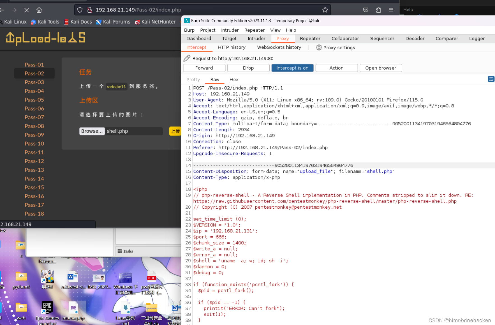
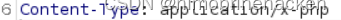
这个肯定要改 Content-Type。
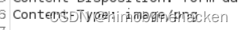
改成 image/png。
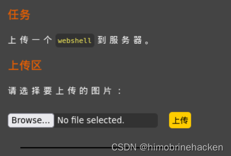
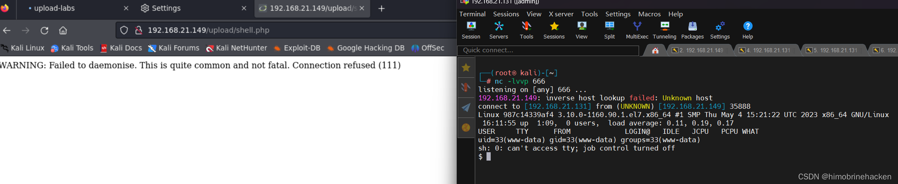